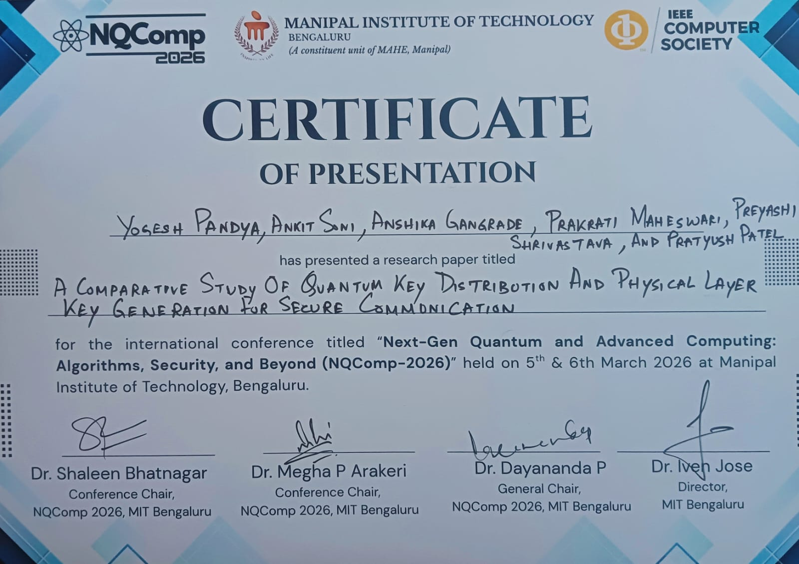
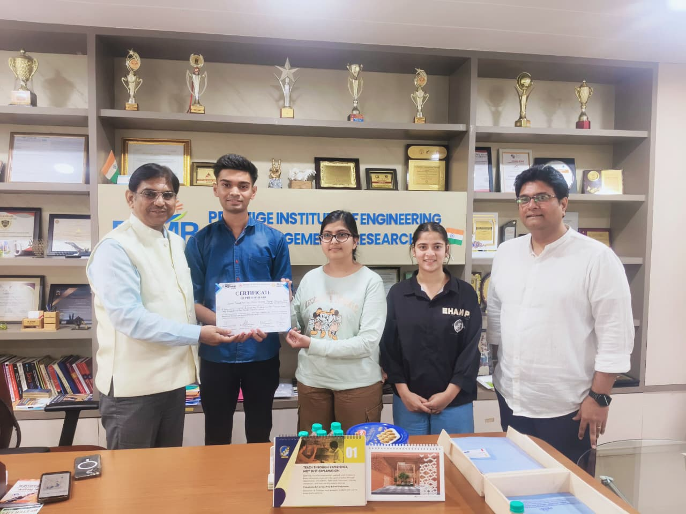
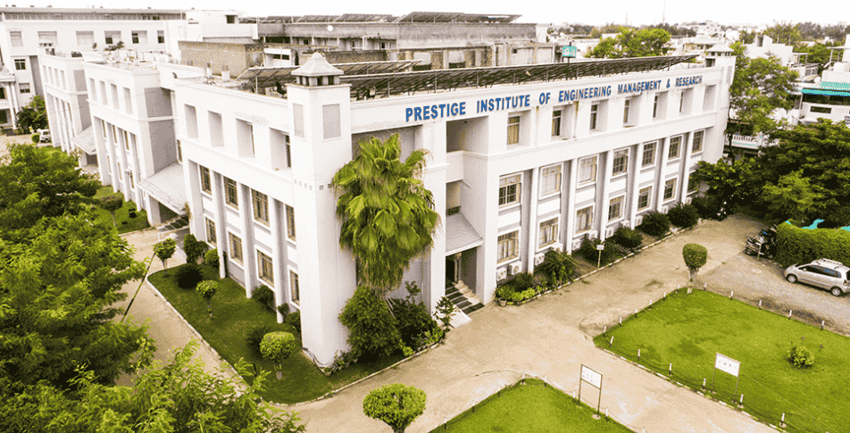

Quantum Computing
Quantum algorithms, quantum information, quantum communication and hybrid quantum-classical approaches.
UNDERGRADUATE STUDENT RESEARCHER · INDORE, INDIA
I am a Computer Science and Engineering undergraduate at Prestige Institute of Engineering Management and Research (PIEMR), Indore. My research interests span quantum computing, quantum cryptography, post-quantum security, AI-driven signal processing and secure communication.
01 / ABOUT
Pratyush Patel is an undergraduate Computer Science and Engineering student at Prestige Institute of Engineering Management and Research (PIEMR), Indore, Madhya Pradesh, India.
His technical interests include quantum computing, quantum key distribution, post-quantum cryptography, artificial intelligence, cybersecurity and secure communication systems. His work is implementation-oriented: studying methods, building prototypes and evaluating limitations against practical requirements.
His research experience includes work on quantum-assisted and classical approaches to secure communication, alongside AI- and signal-processing-based acoustic tracking. He values reproducible experiments, careful baselines and evidence-backed technical claims.
02 / RESEARCH
Areas explored through research, implementation and technical evaluation.
Quantum algorithms, quantum information, quantum communication and hybrid quantum-classical approaches.
Quantum key distribution, secure key establishment and comparisons with classical physical-layer key generation.
Cryptographic approaches designed to address risks associated with future large-scale quantum computers.
Machine learning, acoustic source localisation, signal analysis and intelligent sensing systems.
03 / PUBLICATIONS
Publication records are linked to their DOI landing pages.
Research on integrating post-quantum cryptographic concepts into a blockchain-based digital wallet architecture.
DOI: 10.1109/NQComp68334.2026.11497715 ↗A comparative study of quantum key distribution and physical-layer key generation methods for secure communication.
DOI: 10.1109/NQComp68334.2026.11497650 ↗Citation counts are not stated. Verify publication metadata against publisher and indexing records.
04 / PRESENTATIONS
Presented at “Next-Gen Quantum and Advanced Computing: Algorithms, Security, and Beyond (NQComp-2026),” held at Manipal Institute of Technology, Bengaluru, on 5–6 March 2026.
Research presentation exploring a hybrid quantum-classical approach to acoustic source tracking, combining quantum-computing methods with classical signal-processing concepts.
05 / PROJECTS
Exploration of acoustic localisation and tracking using signal-processing methods and machine-learning techniques.
Blockchain-based wallet research incorporating post-quantum cryptography concepts, dynamic fees and proof-of-work consensus.
Comparative investigation of quantum key distribution and physical-layer key generation approaches.
Quantum digital-signature protocol simulation with protocol tests and attack-detection demonstrations.
06 / RESEARCH JOURNEY
Selected photographs and presentation documentation.



07 / ACADEMIC IDENTITY
Public links to academic and professional records.
An X profile URL was not available in the supplied information, so no unverified X account is linked.
08 / CONTACT
For research discussions, collaboration and technical exchange.